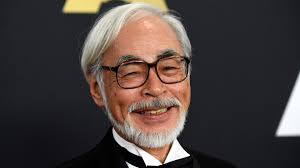

Quem é Hayao Miyazaki?
Hayao Miyazaki é um renomado diretor, roteirista, animador e co-fundador do Studio Ghibli. Nascido em 5 de janeiro de 1941, em Tóquio, Japão, ele é amplamente reconhecido como um dos maiores cineastas da história da animação. Sua obra é marcada por personagens profundos, paisagens deslumbrantes e histórias que misturam fantasia, realismo e mensagens ambientais.

Fatos e Destaques da Vida de Miyazaki
-
1941: Nasce em Tóquio, Japão. Seu interesse por aviação e paisagens surgiu graças ao trabalho de sua família na indústria aeronáutica.
-
1963: Começa a trabalhar na Toei Animation como animador. Foi nesse período que desenvolveu suas habilidades artísticas.
-
1979: Dirige seu primeiro longa-metragem, O Castelo de Cagliostro, baseado na série Lupin III.
-
1984: Lança Nausicaä do Vale do Vento, considerado um de seus primeiros trabalhos autorais e o precursor do Studio Ghibli.
-
1985: Co-funda o Studio Ghibli ao lado de Isao Takahata.
-
2001: Lança A Viagem de Chihiro, que se torna um sucesso mundial e ganha o Oscar de Melhor Filme de Animação em 2003.
-
2013: Após o lançamento de Vidas ao Vento, anuncia sua aposentadoria, mas continua ativo em novos projetos.
Habilidades e Estilo
Miyazaki é conhecido por sua abordagem artesanal à animação. Ele frequentemente participa de todas as etapas de seus filmes, desde a concepção até a supervisão dos detalhes mais sutis.
- Arte detalhada: Suas paisagens são ricas em detalhes e muitas vezes inspiradas na natureza e na arquitetura japonesa e europeia.
- Personagens femininas fortes: Miyazaki destaca protagonistas femininas independentes e corajosas.
- Temas ambientais: Filmes como Princesa Mononoke e Nausicaä abordam a relação entre humanos e a natureza.
- Histórias complexas: Suas narrativas não subestimam o público, oferecendo profundidade emocional e reflexões filosóficas.
Principais Premiações
- Oscar de Melhor Filme de Animação por A Viagem de Chihiro (2003).
- Leão de Ouro pelo conjunto da obra no Festival de Veneza (2005).
- Prêmio de Animação do Japão por O Castelo Animado (2004).
- Indicações ao Oscar por O Castelo Animado, Vidas ao Vento, e O Conto da Princesa Kaguya.
Legado
O impacto de Hayao Miyazaki na indústria da animação é inegável. Seus filmes não apenas alcançaram sucesso comercial, mas também conquistaram o coração de milhões de pessoas ao redor do mundo. Ele é amplamente considerado um visionário, elevando a animação a uma forma de arte respeitada globalmente.